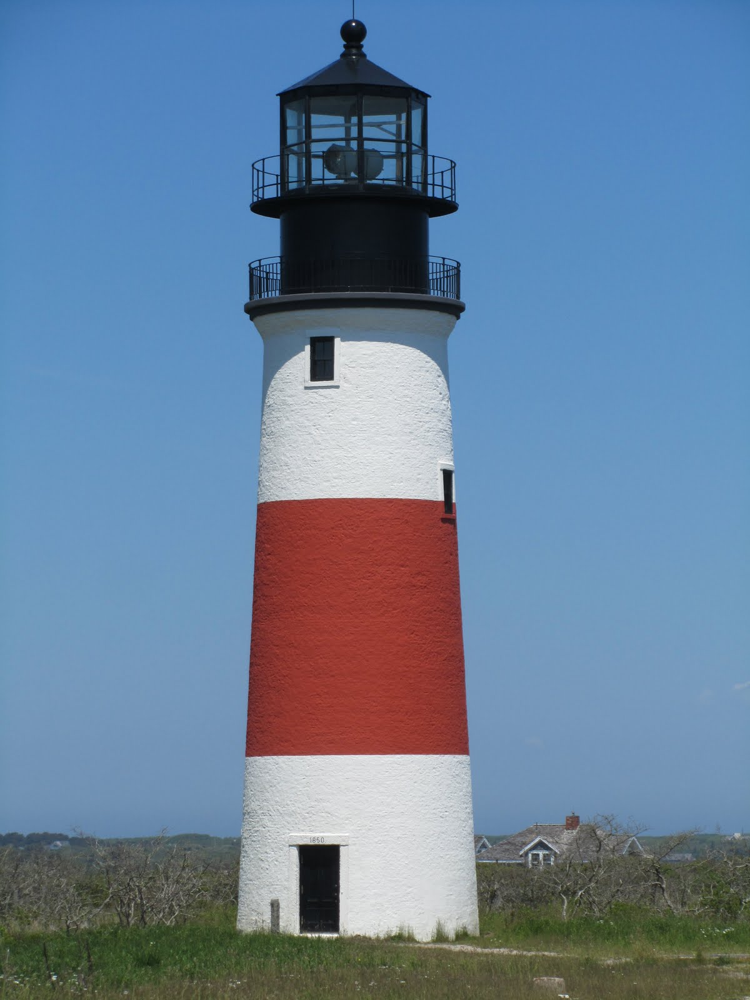

Contact Us
stayforgoodack@gmail.com
(401) 595 - 0013

Nantucket is home to only about 10,000 residents, but sustains a population of nearly 60,000 each year. This means that roughly 5 in 6 homes are dedicated to seasonal vacationers.
Nantucket contains some of New England’s most expensive homes -- and therefore its highest rental rates (often several thousand dollars per week). Optimizing the charitable value in Nantucket homes is more efficient than most places in the country.
Trust is the cornerstone of Stay For Good’s entire organization. By making connections in Nantucket’s wide social sphere, we aim to connect homeowners with renters that they are familiar and comfortable with to achieve this ideal.
Stay For Good seeks Nantucket homeowners that typically do not rent their homes while vacant. Anyone with a vacation home on Nantucket that isn't always occupied is eligible to receive prospective matches from Stay For Good.
We utilize the unique network signature to Nantucket to fill each home with mutual friends of homeowners – not random strangers. When Stay for Good finds a potential match, the homeowner receives a rental request from us, which is then either accepted or rejected. By agreeing to work with Stay For Good, homeowners are in no way obligated to rent their home – they are only agreeing to consider potential matches.
Stay For Good handles all operations and logistics of each rental, but only serves as an intermediary – we never make any decisions about properties without homeowner consent. Stay for Good provides extensive insurance policies, prompt and thorough cleaning services, and on-site renter relations to all participating homeowners.
The funds raised through rental fees are then transferred to one of our partnering charitable causes of the homeowner’s choice. As a nonprofit, our slim commissions are strictly used for insurance premiums, cleaning fees, and operational expenses.


Liam is a first year student at the University of Virginia, studying Commerce. He has spent his last five summers on Nantucket as a caddie at Sankaty Head Golf Club, and is originally from Barrington, Rhode Island. Liam started developing Stay for Good during the summer of 2016.
Dylan is a second year student at the University of Virginia, majoring in Economics and English. He has also spent his last five summers at Sankaty Head Golf Club, and his last three as the club's Caddiemaster. Dylan is from Washington, D.C.